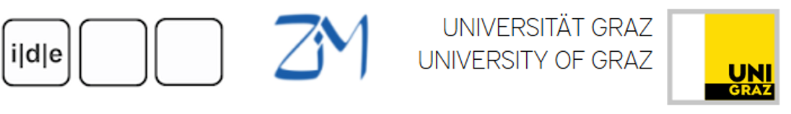

An Introduction to Markup, XML, and TEI
Martina Scholger
Centre for Information Modelling - Austrian Centre for Digital
Humanities, University of Graz
Where is the text?
- In the shape of letters and their layout?
- In the original form which the copy derives?
- In the stories we read into it? The author‘s intention?
- A document is an objects that exists in the world, can be digitized.
- A text is an abstraction, created for a community of readers which we can markup.
- We can markup (encode, annotate) multiple perspectives on a text in one TEI document.
From print to ELTeC edition
What is this?
Lennä, lennä, leppäkerttu,
ison kiven juureen.
Lennä leikkikedon kautta
unipuuhuun suureen.
Kulta-kultalehden alla
äiti puuron keittää.
Unituutu leppäkertun
lämpimästi peittää.
Laula, laula, unilintu,
tuosku, tuomenterttu.
Nuku, punapaitulainen,
pikku leppäkerttu.
What does markup do?
- With the help of markup languages, structures, meanings and knowledge is technically highlighted.
- Markup makes explict to a machine what is implicit to a person.
- Markup is readable, processable and reusable for humans and machines.
- Markup allows to re-use and present the material in different output formats, for different contexts and different user groups.
- Markup is used in many different fields, for many different purposes.
Types of markup
- Procedural markup
- provides instructions for programs
RED INK ON; print "Fanny Lewald"; RED INK OFF
- Presentational markup
- deals with the layout of a text
\textcolor{red}{Fanny Lewald}
- Descriptive markup
- deals with the semantics of a text
<persName>
<forename>Fanny</forename>
<surname>Lewald</surname>
</persName>
Descriptive markup
- It is usually more useful to mark up what things represent rather than what they look like.
- Using descriptive markup enables us to make explicit the distinctions we want to make when processing a string of characters.
- It gives us a way of naming, characterising, and annotating textual data in a formalised way and recording this for re-use.
Markup as a scholarly activity
- The application of markup to a document is not an automatic process.
- The editor has to decide what markup to apply, and how this represents the original.
- Markup means interpretation.
- Markup can assist in answering research questions.
- Needs ressources.
Separation of form and content
- Presentational markup cares more about fonts and layout than meaning.
- Descriptive markup says what things are, and leaves the rendition of them for a separate step.
- Separating the form of something from its content makes it much easier to re-use.
- It also allows easy changes of presentation across a large number of documents.
- Separation of representation and presentation -- Single-Source-Principle.
XML – Extensible Markup Language
- W3C standard since 1998.
- XML is an extensible markup language for structuring and organizing information.
- XML is a metalanguage for defining domain-specific XML vocabularies.
XML elements
- Each text element has a corresponding start-tag and end-tag.
- The element’s content is surrounded by the corresponding tags:
- Empty elements (= without content) are closed straight away:
<element/>
More details on XML
- XML is structured data
- XML is extensible
- XML is expressed in plain text
- XML must be well-formed
- XML can be validated against a model
- XML is application-, platform- and vendor- independant
- XML is human and machine readable
- XML is used for the data exchange
Well-formed XML documents
- A single root element contains the whole of an XML document.
- Element/attribute names are case sensitive.
- Everything is properly delimited.
- The characters < (<) and & (&) must always be "escaped" if you want to use them in the text.
- Each subtree is properly nested within the root node and produce no overlap.
- Well-formed:
<lg type="stanza">
<l>Lennä, lennä, leppäkerttu,</l>
<l>ison kiven juureen.</l>
<l>Lennä leikkikedon kautta</l>
<l>unipuuhuun suureen.</l>
</lg>
- Not well-formed:
<lg type="stanza">
<l><s>Lennä, lennä, leppäkerttu,</l>
<l>ison kiven juureen.</s></l>
<l><s>Lennä leikkikedon kautta</l>
<l>unipuuhuun suureen.</s></l>
</lg>
XML Terminology
© James Cummings
Test yourself!
Which of the following examples are well-formed?
<name>Fanny Lewald</name>
<persName><forename>Fanny</forename><surname>Lewald</surname></persName>
<persName><forename>Fanny<surname></forename>Lewald</surname></persName>
<name type="person">Fanny Lewald</name>
Test yourself!
Which of the following examples are well-formed?
<name type=person>Fanny Lewald</name>
<name type="person">Fanny Lewald</Name>
<1name type="person">Fanny Lewald</1name>
<name>Fanny Lewald<person/></name>
<name type="person" type="writer">Fanny Lewald</name>
Validity means
- Correct vocabulary: all elements and attributes exist in that language.
- Correct grammar: elements are used in the right place, in the right order.
oXygen XML Editor
- Launch the oXygen XML editor
- If you haven't installed oXygen yet
- Go to http://www.oxygenxml.com
- Download and install
- Request free 30-day trial version
Exercise 1: Mark up a poem in XML
- Step 1: Start a new XML document
- Step 2: Create a division
Exercise 1: Mark up a poem in XML
Useful shortcuts in oXygen
| Mac | PC | Description |
| Command + N | CTRL + N | open a new document |
| Command + S | CTRL + S | save document |
| Command + E | CTRL + E | encloses selected content in a tag |
| Command + Shift + Comma | CTRL + Shift + Comma | surrounds selected content in a comment |
| Command + Shift + P | CTRL + Shift + P | formats the document (pretty code) |
| Command + Shift + V | CTRL + Shift + V | validates your document |
| Command + Shift + W | CTRL + Shift + W | checks if your document is well-formed |
What kind of document can the TEI cope with?
- The TEI takes a generalistic approach and should be able to cope with texts
- … of any size
- … language
- … complexity
- … on all media
- … from every time and place
books, journals, manuscripts, letters, rolls of papyrus, coins, notebooks, postcards, inscription tablets, web pages, etc.
Medieval calendar and account books
Medieval manuscripts (witnesses)
Inscriptions (squeeze) and seals
For the encoding of epigraphic documents see EpiDoc
Print and online journals
What is the TEI?
- An encoding standard for the representation of texts in digital form
- Guidelines specifying encoding methods
- established standard in the Humanities, Social Sciences and Linguistics
- encoding of printed works, language information, letters, poems, performances, dictionaries, manuscripts, etc.
- A consortium
- founded in 1987
- which develops and maintains the standard
What does the TEI offer?
- Guidelines for the encoding of texts
- Current version: TEI P5, Version 3.6.0
- A freely available manual „The Guidelines“
- Description an formal definitions of more than 576 markup distinctions
- Active participation: https://github.com/TEIC/TEI/issues
- Tools
- Stylesheets for further transformation (HTML, PDF, EPUB,…)
- Roma for the creation of project specific schemas
- Activities
TEI Basic structure
<TEI xmlns="http://www.tei-c.org/ns/1.0">
<teiHeader>
<fileDesc>
<titleStmt>
<title>
</title>
</titleStmt>
<publicationStmt>
<p>
</p>
</publicationStmt>
<sourceDesc>
<p>
</p>
</sourceDesc>
</fileDesc>
</teiHeader>
<text>
<front>
</front>
<body>
<div>
</div>
</body>
<back>
</back>
</text>
</TEI>
TEI Infrastructure (module 1: infrastructure)
The module introduces the conceptual framework of the TEI
- TEI Modules
- Defining a TEI Schema
- TEI Class System
- …
Default text structure (module 4: textstructure)
The module describes the default high-level structure for TEI documents. A full (valid) TEI document combines metadata represented in the <teiHeader> and the document represented by a <text> element (and/or <facsimile> and/or <sourceDoc>).
- Body
<body> - Front Matter (title page, prefaces, dedications, etc.)
<front> - Back Matter (appendices, indices, etc.)
<back> - Divisions
<div> - Salutations
<salute> - Dateline
<dateline> - …
TEI Header (module 2: header)
The TEI header module provides elements for the description of the encoded work‘s metadata
- File Description (mandatory)
<fileDesc> - Encoding Description
<encodingDesc> - Profile Description
<profileDesc> - Revision Description
<revisionDesc> - …
Elements available in all TEI documents (module 3: core)
The module describes elements which may appear in any kind of text.
- Paragraphs
<p> - Punctuation
<pc> - Highlighting and Quotation
<hi>, <q>, <quote> - Simple Editorial Changes
<sig>, <corr> - Names, Dates, Numbers
<name>, <date>, <number> - Abbreviations
<abbr>, <expan> - Addresses
<address> - Simple Links and References
<ref>, <ptr> - Verse and Drama
<lg>, <l> - Lists
<list>, <item> - Notes
<note> - …
Exercise 2: Mark up a poem in TEI
- Step 1: Start a new TEI P5 document
- From the ’File’ menu select ’New’, click on ’Framework-Templates’, select ’TEI P5’ and choose 'All'.
- This should open up a basic TEI document
- Step 2: Create a division within the 'body'
Exercise 2: Mark up a poem in TEI
- Step 3: Insert plain text into the editor or the encoded poem from the first exercise
- Step 4: Mark up the stanzas (
<lg>) and lines (<l>) - Step 5: Add a
@type attribute to the stanzas to distinguish between 'quatrain' and 'couplet' groups. - Step 6: Check if your document is well-formed
- Step 7: Mark up the rhyming words in your sonnet (use the Guidelines, chapter 6 'Verse')
- Step 8: Add basic metadata to the TEI header using chapter 2
- Completed example
TEI Stylesheets: HTML Output
Use 'TEI P5 XML' transformation scenario in Oxygen
TEI Customization
- A schema usually does not contain all elements and attributes of the TEI (TEI all) but consists of a project-specific selection of modules (customization).
- ROMA allows for adjusting the TEI to individual specific needs (https://romabeta.tei-c.org/)
- ODD (One Document Does it all)
Modules needed for our poem
Credits
Thanks to Lou Burnard, Syd Bauman, James Cummings, Sebastian Rahtz, and the whole TEI Community for sharing workshop materials!
Some important links
- TEI Website:
- What is the Text Encoding Initiative (Lou Burnard):
- TEI GitHub repository:
- Mailing list:
- A bit of TEI's history: